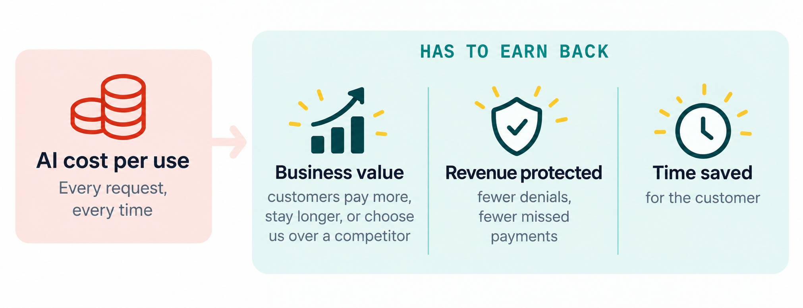

Making AI pay for itself
Most software costs almost nothing extra each time someone uses it. AI is different: every action costs money each time it runs, so a popular feature can also become an expensive one. That's why I treat AI like any other investment: it has to earn more than it costs.

Cost sets the floor, value sets the price
I aim for a 75% gross margin on any hard cost. If an action costs us $0.10, it should bring in at least $0.40. Value to the customer decides whether we can charge more.
Put AI where it adds the most value
AI agent costs are still unpredictable, so I use them where they make the biggest difference, with usage limits and cost tracking per account. If a simple rule can do the job reliably, it doesn't need AI.
One-time investment vs. ongoing cost
Training or tuning a model is an up-front investment. Running it is an ongoing cost. Reusing knowledge the model already has, instead of starting from scratch every time, keeps each action inexpensive.
Compare the total cost, not just the token bill
Hard-coding a report might look cheaper, until a developer has to pull the data every month. Automating my metrics with Claude cut the time I spend on tracking by 90%, so the PM and developers can read the data, decide and move on. I weigh embedded agents the same way: the time and overhead they save can easily outweigh the tokens they use, as long as patient data stays protected and the output is checked.
![Our product approach: every idea captured, then organized into a clear vision. Step 1, Capture: a pile of sticky notes. Step 2, Organize: six focus areas. Claims: fix rejected claims, bulk close, saved narratives. Billing: running totals, overpayment alerts, fewer clicks. Reports: key metrics, timely filing, saved filters. Payments: bulk deposits, auto-posting, clear allocation. Eligibility: one-click checks, last verified date, verify before submit. Worklists: overdue claims, unverified insurance, accepted treatment plans.](images/product-approach.png)